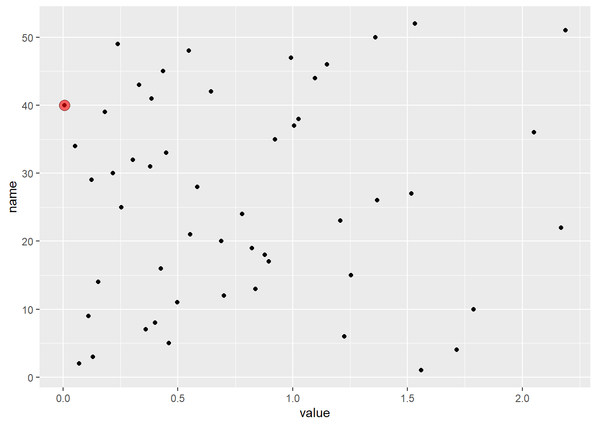

Chapter 7 Introduction to R
7.1 Packages for this chapter
For the materials in this chapter we need to load the tidyverse package suite. You will get a warning message stating something about masking of functions.
7.2 Example data
To get an idea on how to work with objects in R we need an object. Here we create an object called a data frame. We will be mainly working with data in a data frame so I introduce this early.
Th data frame contains two variables called A and B. Both variables are collections of numbers randomly drawn from a pre-specified normal distribution
In math form we would note (for variable A):
\(\Large A \sim Normal(\overline{x}, S_x)\)
meaning A is a random variable from a Normal distribution with mean \(\overline{x}\) and standard deviation of the mean of \(S_x\).
Luckely, we do not have to worry about math too much, because most functions that we need are build into R. Here we use the function rnorm() to generate a normally distributed series of numbers. To inspect how we can use this function type ?rnrom in the Console.
## for setting the random number generator - to increase reproducibility
## to get help
# ?rnorm
set.seed(1234)
normals <- rnorm(n = 1000, mean = 5, sd = 1.36)
normals_2 <- rnorm(1000, mean = 1.5, sd = 1.42)
df <- tibble(A = normals,
B = normals_2)
df## # A tibble: 1,000 x 2
## A B
## <dbl> <dbl>
## 1 3.36 -0.212
## 2 5.38 1.93
## 3 6.47 -0.686
## 4 1.81 2.40
## 5 5.58 2.50
## 6 5.69 -1.21
## 7 4.22 2.83
## 8 4.26 1.18
## 9 4.23 0.543
## 10 3.79 2.13
## # ... with 990 more rowsThe resulting dataframe has two columns and 1000 rows.
7.3 Plot histogram
Let’s see
df %>% ## pipe `%>%` takes a value an puts it in a function
pivot_longer(A:B, names_to = "distro", values_to = "value") %>%
ggplot(aes(x = value)) +
geom_density(aes(colour = distro), size = 2)
7.4 Statistics
How would we perform inference on this data to assess whether the mean of distro A is different from the mean of distro B. WE could do this in many ways. One classical approach is to use the Student’s t-Test to analyze two means. The underlying assumtions of this test is:
- the data needs to come from a normal distributed sample
- the variance needs to be equal
- the sample size is reasonably large
- the samples have been gathered independently (from one another)
Let’s assume we meet all these assumptions.
##
## Welch Two Sample t-test
##
## data: df$A and df$B
## t = 55.996, df = 1996.6, p-value < 2.2e-16
## alternative hypothesis: true difference in means is not equal to 0
## 95 percent confidence interval:
## 3.322635 3.563818
## sample estimates:
## mean of x mean of y
## 4.963828 1.5206027.5 General stuff about R
R is case sensitive
Important note: R is case-sensitive, meaning that it will matter whether you use capital or lower case, keep this in mind if you get a cryptic warning or error!
Programming (in R) can be frustrating
- Writing (R) code can be challenging
- You will get mind-boggling errors.
- R is extremely picky about capitals and every opening
(,[or{must be matched by a closing),]or}. - Finding the right function or package for the job at hand can be a challenge (the fact that there are currenly over 15,000 packages does not make that job any easier)
- Getting your data in the right shape, clean and type (see below) can be time consuming
- … and many more challenges
Locale & decimal placeholder
Mind that in R . is the default decimal placeholder!
Many import functions have a solution for when you are trying to parse files that use e.g. the , as a decimal placeholder.
for example
## Warning: 1 parsing failure.
## row col expected actual file
## 2 -- 3 columns 4 columns literal data## # A tibble: 2 x 3
## X1 X2 X3
## <dbl> <chr> <chr>
## 1 1 3;2 4;3
## 2 4 7;5 6;6## i Using ',' as decimal and '.' as grouping mark. Use `read_delim()` for more control.## # A tibble: 2 x 3
## X1 X2 X3
## <dbl> <dbl> <dbl>
## 1 1.3 2.4 3
## 2 4.7 5.6 6.87.6 The {tidyverse} suite of R packages
List of available CRAN packages http://cran.r-project.org/web/packages/available_packages_by_date.html
For this course we use the {tidyverse} a lot becasue the syntax follows along the lines of communication in Englih. It is more intuitive, especially to staRters ;-)

{tidyverse} functionality and packages
See: http://tidyverse.tidyverse.org/ for more info
The {tidyverse} package includes (among others):
- Wrangling:
{dplyr},{tidyr} - Reading data:
{readr},{readxl} - Functional prgramming:
{purrr} - Models:
{broom} - Strings and regular expressions:
{stringr} - Factors:
{forcats} - Time (series):
{lubridate}
For all full list type tidyverse_packages() in the console, try it now!
7.7 ‘Biological’ Packages
For ‘Biological’ application go to http://www.bioconductor.org
Installing Bioconductor packages is different from CRAN packages
example: {affy}
Each Bioconductor package has a landing page:
https://www.bioconductor.org/packages/release/bioc/html/affy.html
## installing `{affy}` package
BiocManager::install("affy")
biocLite("affy")
## loading affy package and the vignettes pages of this package
# library(affy)
# browseVignettes("affy")Bioconductor also has many packages that aid Bayesian inference
7.8 Getting help
Vignettes
- Vignettes are long explanations and demos of a package
- A vignette contains examples and a work flow that shows how the package can be used and which (research) questions can be addressed with the functions and datasets in the package
- It usually is a good place to start for examples
- It also shows the so-called dependencies of a package
- It explains which other packages you would need and how the data should look to be able to work with the package the vignette belongs to
Getting Help examples
Examples and demos on functions and packages
- If you’re stuck, try the help (
?or??orhelp()) function. - You can get help about any R function by running
?function_nameand?package_name - or
??package_name, skip down to the examples and look for code that matches what you’re trying to do. - Another great tool is
GoogleorStack Overflow: trying googling the error message, as it’s likely someone else has had the same problem, and has gotten help online.
7.9 Using functions
Function arguments
When calling a function you can explicitly name an argument by using =

If you ommit naming an argument, the function still works, but the code is harder to read for a human.
## [1] TRUEWrite code for humans AND computers, be explicit!
R is a functional programming language
Functional programming is basically programming by the use of functions. Many of the functions you will use are pre-exisiting and present either in the base R installation (R-base) or in add-ons called packages in R-lingo.
Every operation in R is a function call with which you execute a function on zero or more arguments. As an example we look at the build-in function in R-base called mean(). When we want to learn more about this function and how to use it, we can use the help() function or the ? which is a short-cut for the help() function. Let’s call help() on the mean() function.
help(mean)Running the above code will yield the following information in the Help pane of the Navigation window.
## _A_r_i_t_h_m_e_t_i_c _M_e_a_n
##
## _D_e_s_c_r_i_p_t_i_o_n:
##
## Generic function for the (trimmed) arithmetic mean.
##
## _U_s_a_g_e:
##
## mean(x, ...)
##
## ## Default S3 method:
## mean(x, trim = 0, na.rm = FALSE, ...)
##
## _A_r_g_u_m_e_n_t_s:
##
## x: An R object. Currently there are methods for numeric/logical
## vectors and date, date-time and time interval objects.
## Complex vectors are allowed for 'trim = 0', only.
##
## trim: the fraction (0 to 0.5) of observations to be trimmed from
## each end of 'x' before the mean is computed. Values of trim
## outside that range are taken as the nearest endpoint.
##
## na.rm: a logical value indicating whether 'NA' values should be
## stripped before the computation proceeds.
##
## ...: further arguments passed to or from other methods.
##
## _V_a_l_u_e:
##
## If 'trim' is zero (the default), the arithmetic mean of the values
## in 'x' is computed, as a numeric or complex vector of length one.
## If 'x' is not logical (coerced to numeric), numeric (including
## integer) or complex, 'NA_real_' is returned, with a warning.
##
## If 'trim' is non-zero, a symmetrically trimmed mean is computed
## with a fraction of 'trim' observations deleted from each end
## before the mean is computed.
##
## _R_e_f_e_r_e_n_c_e_s:
##
## Becker, R. A., Chambers, J. M. and Wilks, A. R. (1988) _The New S
## Language_. Wadsworth & Brooks/Cole.
##
## _S_e_e _A_l_s_o:
##
## 'weighted.mean', 'mean.POSIXct', 'colMeans' for row and column
## means.
##
## _E_x_a_m_p_l_e_s:
##
## x <- c(0:10, 50)
## xm <- mean(x)
## c(xm, mean(x, trim = 0.10))
## If we want to know what the arguments are that can be entered into the function mean we can review the information in the “Arguments” paragraph. Looking at this part of the help documentation we see that mean() takes 3 named arguments and an argument called ... which we explain in more details in Chapter ??. The named arguments that can be entered into mean() are:
x
trim and
na.rm
Let’s look at them in detail.
The description for x states that x is defined as an R object. Clearly we do not yet know what kind of R object there are bu from the description of x can make out a few examples: x can be a numeric, a logical, a date, a date-time or time interval object. Later in this chapter these objects are explained in more detail, but it is rather intuitive that mean at least can take an object consisting of numbers. Below we create an object x, containing 10 random numbers that are sampled from a normal distribution (using a function call to rnorm()).
## [1] 1 2 3 4 5 6 7 8 9 10If we want to apply mean to this vector x of 10 numbers we can do so by calling mean() on x
## [1] 5.5When we look at the second and third argument we can deduce that the second argument trim takes any value between 0 and 0.5 and that this argument defines a truncation of the vector x, before the mean is calculated. Here, I show what trim = 0.2 does to our average of x
The trimmed mean is calculated on an ordered (from smallest to largest value) vector x
## [1] 5.5## [1] 5.5The last argument of mean() is na.rm. If we look at the descrition we can learn that this argument has something to do with misisng values (NA) being present in a vector and how the mean() function will deal with them.
Below two NA values are added to our vector x at position 3 and 6.
## [1] 1 2 NA 4 5 NA 7 8 9 10What happens if we apply mean() to our new x containing two NA values.
## [1] NAThe answer of R is NA which seems cryptic but if we think about it: what is the mean of 8 numbers and two missing values. I don’t know, because I don’t know how to calculate the mean of missing values. R does not either and it let’s us know by saying NA. It does not know how to handle the NA values. By setting the na.rm option to TRUE, the mean function first removes the NA values, before computing the average.
## [1] 5.75Finaly, looking at the help documentation. At the bottom the examples are usually displayed. Here you can see a demo on how to use a function.
The examples for the mean() function can easily be copied-and-pasted for your own use. You will normally look at the examples first, before diving into the rest of the documentation.
# Examples from the documentation for the mean() function:
x <- c(0:10, 50)
xm <- mean(x)
c(xm, mean(x, trim = 0.10))## [1] 8.75 5.50Now that we know how to get help for an R function and how to read the help documentation, it is time to explore R further.
From the above example we learnt that knowing the type and class of a dota object is important for using a function on that data object. Therefore, below we will review some of the the most important data objects and how they are interrelated. It is important to generally know about the different data typres and classes. It will save, but not completely prevent you from making common mistakes and errors in R
7.10 R objects
R is also an object oriented language. This means that data-structures are stored in objects. Objects have a class and can consist of one (or in some classes) more data types. Below I will review different object classes and types. The use of class and type can be confusing. Relevant for scripting is that you understand the basic differences between different objects.
R objects can be devided in basically two categories:
- Atomic vectors
- Lists
In Chapter 7 we will mainly look at atomic vectors. In chapter 8 we will examine lists and dataframes.
The diagram below also shows us NULL which technically is not a vector, but is an atomic value, usually used as ‘zero-length’ vector.
DiagrammeR::grViz("
digraph rmarkdown {
'Vector' -> 'Atomic'
'Vector' -> 'Recursive vectors' -> List -> 'Data frame'
'NULL'
}
", engine = "circo")Figure 7.1: Elementary building blocks in R
Atomic vectors and Lists can be subdevided and below I will explain the most important R objects and their data type. The graph below shows the main object categories, classes and their types. Lists in R are sometimes collectively called Recursive vectors because they are build from (multiple) atomic vectors. This scheme may appear daunting to you at first, but no panic, we will introduce the different types slowly and before short, it will appear natural to you.
Below we see the two categories Atomic and Recursive vectors subdivided. See also graph
DiagrammeR::grViz("
digraph rmarkdown {
'R object' -> 'Atomic vectors'
'R object' -> 'Recursive vectors'
'Atomic vectors' -> 'Numeric'
'Atomic vectors' -> 'Logical'
'Logical' -> 'TRUE'
'Logical' -> 'FALSE'
'Logical' -> 'NA'
'Atomic vectors' -> 'Character'
'Numeric' -> 'Integer'
'Numeric' -> 'Double'
'Numeric' -> 'Inf'
'Numeric' -> '-Inf'
'Numeric' -> 'NaN'
'Recursive vectors' -> List
'List' -> 'Data frame'
'Data frame' -> Tibble
'Double' -> 'Date [S3]'
'Double' -> 'Date-Time [S3]'
'Integer' -> 'Factor [S3]'
}
", engine = "circo")Figure 7.2: All important R objects in one graph
Striking is that a data frame in R is special list. Where R-lists can contain different types of vectors of different lengths, data frames can contain different types of vectors with the same length; A data frame is alway rectangular. Tibble is just a special data frame with nice printing options. Matrices and arrays are build on top of atomic vectors. We will later see how this works. Dates, Date-Time and Factors are S3 vectors; a special class of R-objects and named ‘S3’ for historical reasons.
We learn about ‘recursive vectors’ in the next chapter.
Data Types
The most simple objects in R are single values. They can be of different class and type. Single objects are commonly vectors of length 1, consisting of one class and holding one type of data.
Values can be of class:
- Numeric (can be of type “double” or of type “integer”)
- Integer (is of type “integer”)
- Logical (is of type “logical”)
- Date and Date-Time (are of class “POSIXct” “POSIXt”)
- Factor (are of class “factor”)
- Special values are:
NaN(not a number, but of type “numeric”),NA(R’s indication for a missing value, of type ‘logical’),Infor-Inf(infinite and it’s negative counterpart, of type ‘numeric’),NULL(an empty vector/value, is an ‘atomic’)
There are a number of functions that can be used to inspect an object to learn what the class and type is. Below you will see these functions in action.
You have to know about object types in R, to be able to use functions that are usually meant to have a specific type of object as input and give a specific type of object type as output.
Double vector
double_x <- 5.4 # using the `<-` assign function to create an numeric object
class(double_x) # the class = "nummeric"## [1] "numeric"## [1] "double"## [1] TRUEInteger vector
## [1] "integer"## [1] "integer"## [1] TRUE## [1] FALSELogical vector
## [1] "logical"## [1] "logical"## [1] TRUEDate and Date-Time
Parsing Dates and Date-Times can be very tricky because there is no real standard in date/date-time notation around the world. So if you generate data with dates and/or date-times in it, please record the format in the metadata to the data.
## assume 'Dutch' format (dd-mm-yyyy)
date_x <- lubridate::as_datetime(
"02/05/1990",
tz = "Europe/Amsterdam", # time-zone
format = "%d/%m/%y") # format in which the date is provided
date_x## [1] "2019-05-02 CEST"## [1] "POSIXct" "POSIXt"## [1] "double"## [1] FALSEdate_time_x <- lubridate::dmy_hms("02/05/1990 22:13:50",
## date-time class
tz = "Europe/Amsterdam")
class(date_time_x)## [1] "POSIXct" "POSIXt"## [1] "double"## [1] FALSECharacter vector
## [1] "character"## [1] "character"## [1] FALSE## combining strings
string_combined <- c(
string_x, "Or do you feel like the sky will come crashing down on you?") %>%
print()## [1] "Hello there, are you still with me?"
## [2] "Or do you feel like the sky will come crashing down on you?"## [1] "Anyway, I think it is time for a coffee break!!"Special values
To do calculations or mathematical approximations we need a number of special characters. Here are the real-world (funny in this context) mathematical equivalents:
NULL-> There is no ‘real world’ equivalent (maybe ‘empty’ comes closest)Inf-> Infinity or \(\infty\)-Inf-> negative infinity or \(-\infty\)NA-> missing value, often indicated as 999 or -999 in SPSS
## [1] "logical"## [1] "logical"## [1] "NULL"## [1] "numeric"Factors
Factors are special R objects to store information on groups or vectors that contain predefined values (order or unordered categorical variables). Below we look at an example from the forcats package. If a variable is categorical you should use a factor in R. Build on top of factors are ordered factors that are categorical variables with values that have a certain order.
Let’s assume we have a month_of_the_year variable in our data.
CAN YOU SPOT THE TYPO?
Using a character vector to record this variable has two problems: There are twelve possible months. Nothing is preventing you from making a typing error. Sorting the character variable as it is is not useful.
## [1] "Dec" "Apr" "Jam" "Mar"## [1] "Apr" "Dec" "Jam" "Mar"You can solve these problems with a factor. To create a factor, start by creating a list of the valid levels:
month_levels <- c(
"Jan", "Feb", "Mar", "Apr", "May", "Jun",
"Jul", "Aug", "Sep", "Oct", "Nov", "Dec"
)Now you can create a factor:
## [1] Dec Apr <NA> Mar
## Levels: Jan Feb Mar Apr May Jun Jul Aug Sep Oct Nov Dec## [1] Mar Apr Dec
## Levels: Jan Feb Mar Apr May Jun Jul Aug Sep Oct Nov DecBe aware: Any values not in the set will be silently converted to NA
Factors prevent you from entering two differently spelled values for the same thing in categorical variable.
Consider this example
tribble(
~ "name", ~"age", ~"sex", ~"bmi",
"Jan", 23, "Male", 34,
"John", 34, "M", 21,
"Sue", 56, "F", 28,
"Kyra", 34, "F", 21
) -> bmi
bmi$sex <- factor(bmi$sex, levels = c("F", "M"))
bmi## # A tibble: 4 x 4
## name age sex bmi
## <chr> <dbl> <fct> <dbl>
## 1 Jan 23 <NA> 34
## 2 John 34 M 21
## 3 Sue 56 F 28
## 4 Kyra 34 F 21
## better:
## inspect levels of intended factor first
tribble(
~ "name", ~"age", ~"sex", ~"bmi",
"Jan", 23, "Male", 31,
"John", 34, "M", 28,
"Sue", 56, "F", 25,
"Kyra", 34, "F", 21
) -> bmi_better
unique(bmi_better$sex)## [1] "Male" "M" "F"
## fix levels of intended factor with {dplyr} and {forcats}
bmi_better %>%
dplyr::mutate(sex_new = forcats::fct_collapse(
sex,
Male = c("Male", "M"),
Female = c("F"))) %>%
ggplot2::ggplot(aes(x = sex_new, y = bmi)) +
ggplot2::geom_point(aes(colour = sex_new))
7.11 Manipulating vectors
Coercion
If we combine values, a vector of length >1 is the result. At the same time there are rules for which type the final product vector will be when combining different types of vector (or values). This is called coercion when it happens implicitely like when you use c(). We call is casting when it happens explicitely when you use a constructor-function like as.numeric(x)
see: https://cran.r-project.org/web/packages/vctrs/vignettes/s3-vector.html and the {vctrs} package for more details. This is considered and advanced topic and will not be dealt with in details in this course.
We will see coercion happen as we examine different types of vectors and combining them below.
Combining values (or vectors) or creating them from scratch can be achieved by using the c() function.
Combining data types
What happens if we combine different types of data in one vector?
## [1] "1" "2" "3" "4"
## [5] "5" "6" "7" "8"
## [9] "9" "10" NA NA
## [13] NA "3" "Python is great!" "R is greater!"## [1] TRUECounting missing values (NA)
## [1] FALSE TRUE FALSE TRUE FALSE## [1] 2Mathematical operations
## Error in sum(vector): invalid 'type' (character) of argumentYou can add/subtract/devide or use other arithmetic functions on numeric vectors
## Warning in a - b: longer object length is not a multiple of shorter object
## length## [1] -1 -1 -1 -1 7## Warning in b - a: longer object length is not a multiple of shorter object
## length## [1] 1 1 1 1 -7## Warning in a/b: longer object length is not a multiple of shorter object length## [1] 0.5000000 0.7500000 0.8333333 0.8750000 4.5000000DISCUSS Mind the Warning message: In a - b : longer object length is not a multiple of shorter object length. Discuss with your neighbour what this means. Try experimenting with increasing or decreasing the number of elements in the vectors above. What does this warning say about how mathmatical operations work in R?
## [1] 25## [1] 1Make sequences
jedi <- rep("Luke", times = 10)
midichlorians <- rep("Force", length.out = 20)
I_am_your_Father <- c(
paste(jedi,
paste("Use the", midichlorians), sep = ", ")
) %>%
rep(each = 3)
I_am_your_Father## [1] "Luke, Use the Force" "Luke, Use the Force" "Luke, Use the Force"
## [4] "Luke, Use the Force" "Luke, Use the Force" "Luke, Use the Force"
## [7] "Luke, Use the Force" "Luke, Use the Force" "Luke, Use the Force"
## [10] "Luke, Use the Force" "Luke, Use the Force" "Luke, Use the Force"
## [13] "Luke, Use the Force" "Luke, Use the Force" "Luke, Use the Force"
## [16] "Luke, Use the Force" "Luke, Use the Force" "Luke, Use the Force"
## [19] "Luke, Use the Force" "Luke, Use the Force" "Luke, Use the Force"
## [22] "Luke, Use the Force" "Luke, Use the Force" "Luke, Use the Force"
## [25] "Luke, Use the Force" "Luke, Use the Force" "Luke, Use the Force"
## [28] "Luke, Use the Force" "Luke, Use the Force" "Luke, Use the Force"
## [31] "Luke, Use the Force" "Luke, Use the Force" "Luke, Use the Force"
## [34] "Luke, Use the Force" "Luke, Use the Force" "Luke, Use the Force"
## [37] "Luke, Use the Force" "Luke, Use the Force" "Luke, Use the Force"
## [40] "Luke, Use the Force" "Luke, Use the Force" "Luke, Use the Force"
## [43] "Luke, Use the Force" "Luke, Use the Force" "Luke, Use the Force"
## [46] "Luke, Use the Force" "Luke, Use the Force" "Luke, Use the Force"
## [49] "Luke, Use the Force" "Luke, Use the Force" "Luke, Use the Force"
## [52] "Luke, Use the Force" "Luke, Use the Force" "Luke, Use the Force"
## [55] "Luke, Use the Force" "Luke, Use the Force" "Luke, Use the Force"
## [58] "Luke, Use the Force" "Luke, Use the Force" "Luke, Use the Force"## [1] 10 10## [1] 10 10 20 20## [1] 10 20 10 20## [1] 10 10 20 20 10 10 20 20## [1] 10 10 20 20 10 10 20 20## [1] 1 2 3 4## [1] 1.000000 1.428571 1.857143 2.285714 2.714286 3.142857 3.571429 4.000000## [1] 0.0000000 0.4444444 0.8888889 1.3333333 1.7777778 2.2222222 2.6666667
## [8] 3.1111111 3.5555556 4.00000007.12 Indices
An index for a vector indicats the position of the vectors element. Indices are much-used tools in each programming language. In R we use two different syntaxes for indices
[]For indexing vector elements (this chapter)[[]]for indexing list-elements or dataframes (Chapter ??)[<rows>, <columns>]for indexing dataframes (Chapter ??)
Below, I show how to use the [] index on atomic vectors
We create a vector containing 100 random normals
set.seed(123)
hundred <- rnorm(100)
## I use the head function to get the first few values
head(hundred)## [1] -0.56047565 -0.23017749 1.55870831 0.07050839 0.12928774 1.71506499To get the third and then the first ten elements of the hundred vector
## [1] -0.5604756## [1] -0.56047565 -0.23017749 1.55870831 0.07050839 0.12928774 1.71506499
## [7] 0.46091621 -1.26506123 -0.68685285 -0.44566197So you see from this example: we can use a vector to index a vector. Let’s elaborate on that.
To see what we created we can plot a density polynom (a sort of histogram displaying a line in stead of bars) using the ggplot2() package. We will use this plotting package extensively in this course. For now just try to follow what the result of the following code is, we will get into more details on plotting in Chapter ??. In order to work with {ggplot2} we need to transform the hundred vector into a dataframe. This is what the enframe() function does. The %>% (or the so-called pipe) symbol we saw before in Chapter 4 will be explained in detail in Chapter ??

Imagine we want to pull out all numbers from the hundred vector that are larger than 0. To do this we can use the index. First we create a vector that has two types of values a TRUE at the position of the value in hundred that is larger than 0 and a FALSE at the positon of the value in hundred that is smaller than 0. Can you estimate how many values in hundred that are smaller than 0?
## [1] FALSE FALSE TRUE TRUE TRUE TRUE TRUE FALSE FALSE FALSEYou see here that from the first ten values in hundred the 3rd, 4th, 5th, 6th and 7th value are larger than 0. The consecutiveness of this observation is pure coincidence.
Now we can use our logical index to get all values larger than 0 from the hundred vector
larger_than_zero_values <- hundred[logical_smaller_than_zero]
## again we ask for the first ten elements of our new >0 vector
larger_than_zero_values[c(1:10)]## [1] 1.55870831 0.07050839 0.12928774 1.71506499 0.46091621 1.22408180
## [7] 0.35981383 0.40077145 0.11068272 1.78691314We indeed see that these 10 values are all larger than 0. How can we check that all values in larger_than_zero_values are larger than zero? By creating different plots. Making plots to check if your code did what you expected is always a good idea. You can not make too many plots!

## or a scatter
larger_than_zero_values %>%
enframe() %>%
ggplot(aes(x = value, y = name)) +
geom_point()
Indeed, no point is equal or smaller than zero. There is one bordeline case. Can you spot it? DISCUSS with your neighbour if you can locate it
We can make it visible by a neat filtering trick:
df <- larger_than_zero_values %>%
enframe()
## the `name` variable is equal to the position of the >0 vector
df %>% ggplot(aes(x = value, y = name)) +
geom_point() +
## we add an additional geom_point for the data filtered for name == 40
geom_point(data = df %>% dplyr::filter(name == 40),
aes(x = value, y = name),
fill = "red",
size = 4,
shape = 21,
alpha = 0.6)
We can pull out this value from the >0 vector by it’s position (40th element) larger_than_zero_values
## [1] 0.005764186So you see, using the index can be valuable if you want to conditionally subset a vector or pull out specific elements by their position. You can also use the index to get opposite values (in this case lower than zero) or to remove elements from a vector. In the exercises below, I will let you practice with the index on vectors some more. This trick can also be used on data frames and lists. I will show you how to do this in Chapter 8. The disadvantage is that using indexes on data frames can yield R code that become difficult to read. The {tidyverse} provides tools to make these operations easier to perform, and code much easier to read. This will be illustrated in Chapter 10
EXERCISES
1. Creating some vectors
set.seed(123)
vec_1 <- rnorm(10)
vec_2 <- as.integer(vec_1)
vec_3 <- c(rep(TRUE, 3), c(rep(FALSE, 4)), NA)
vec_4 <- as.numeric(vec_3)
vec_5 <- c("Marc", "Ronald", "Maarten")- What does
set.seed(123)do? Check the documentation! - What does the above
as.integer()function do? - And
as.numeric()? - Check the contents of
vec_2,vec_3andvec_4 - Determine the
class()ofvec_1tovec_5 - What happens to the data type if we combine (using
c()vec_1 en vec_2)? Why? - What is the resulting datatype is we combine vec_4 and vec_5? Why?
2. R as a calculator
R can be used as a “regular” calculator, we will practice this a bit, just to get familiar with the way R works and displays its information
- What is the sum of 3, 12 and 250?
- What is the difference between 4902 and 3987?
- Calculate 2 to the power of 24
- What is 240 divided by 14?
- What is the average of 12 and 20?
- What is the average of 10.8, 13.7 and 15.9?
3. Data types
R has a variety of different data types and structures. Knowing how to work with them is fundamental to learning and using R. The following exercises give a basic introduction to creating and manipulating them.
Using the c() function here that creates vectors is essential.
- Create a vector (
vec_8) consisting of the numbers 10.5, 20.4, 30.5, 28.9 and 5,4. - Create a vector (
vec_9) consisting of a decreasing sequence of integers from 50 to -10. - Create a vector (
vec_10) consisting of an increasing sequence of even integers from -10 to 50. You can use theseq()function here. - Add the number 5 to the tail of
vec_10, and save the result as a new vector (vec_11. - Create a vector (
vec_12) of five hundred alternating zeros and ones. Use the functionrep()here. - Create a vector (
vec_13) of a hundred, uniformly distributed, random values between -1 and +1. (Hint: see the functionrunif()) Useset.seed(123)to set the random number generator. - Create a vector (
vec_14) of hundred random normal distributed numbers with mean = 2 and standard deviation is 0.3. See?rnorm()for help. - Create a histogram (use function
hist()) of vectorsvec_13andvec_14. Can you notice something striking?
- Calculate the average of all values in
vec_14. (Hint: see the functionmean(). what did you expect to be the result? Why is the answer not exactly equal to2
- Now replace position 5 in vector
vec_14with NA, usevec_14[5]in you call. Confirm your operation on this vector. - Calculate the mean of
vec_14again. (Hint: make sure you deal with the missing values!). Look at?mean()for the solution.
4. Vector indices
In this chapter we saw how to use the [] on a vector.
- Pull out all values that round down to 1.0 in vector
vec_1HINT useas.integer()than create a logical index, then use the logical index to get to your answer
5. The Matrix
- Create a matrix (
matrix_1) of four columns and three rows with increasing integers from 1 to 12, left to right and then top to bottom. Use the functionmatrix(). See the help first. - Create a matrix (
matrix_2) of four columns and three rows, the first column only containing the value1, the second only2, the third only3and the fourth column only4. - Calculate the sum of
matrix_1. (Hint: see the functionsum())
6. From vectors to tibbles
Create the following items:
- A numerical vector named
numbersconsisting of the following numbers: 1.8, 4.5, 10.1, 8.3. - A numerical vector named
primeconsisting of the following integers: 1, 3, 5, 7 and 11 - A character vector named
crazyconsisting of the following values: ‘abc1’, ‘foo2’, ‘bar3’, ‘app5’ and ‘yepp7’ - A logical vector named
valid" consisting of: TRUE, FALSE, FALSE, TRUE and FALSE - Try to create a list called
mylistcontaining the vectorsnumbers,prime,crazyandvalid. - Try to create a
tibblenamedmydatawith the functiontibble()from the above four vectors. This will fail, why? . - Fix the error you found by creating an extra
NAvalue in one of the vectors. Create the dataframe. Also try giving the columns different names. (Hint: see the functionnames()and the functiontibble(). - What happens if you try to calculate the sum of
mydata? - When you look at the structure of the tibble using
str(), you will see that thecrazycolumn with the “abc1”, “foo2”, etc values has a certain data type. Which data type is “name”? Do you think it is the right type? Or do you need to change it? To what other type could you change it?